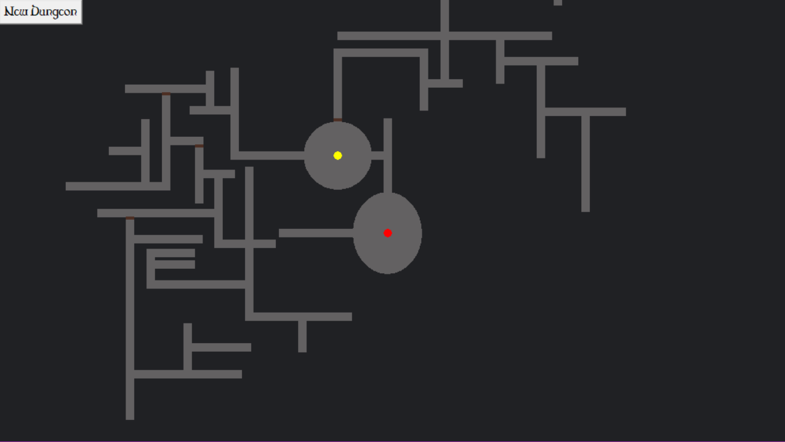

A successor to a program I made in high school. This program randomly generates a dungeon for the role playing game dungeons and dragons. It does this by first creating a starting area than on each side. It randomly decides what should go there if anything than it generates that and does the same for the thing it generated and repeat until there is noting to generate. I learned a lot from this project, many working with the tkinter library in python so I can make windows and a GUI